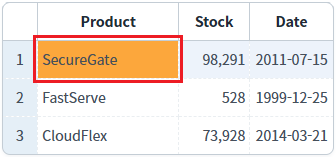
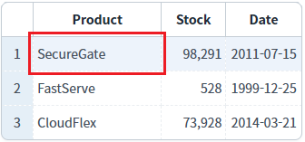
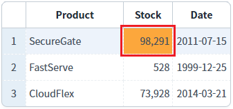
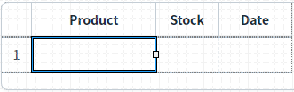
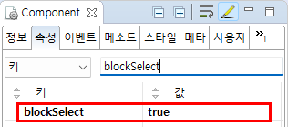

GridView의 'setBlockSelec' 메소드와 바디 컬럼의 'blockSelect' 속성을 사용하여, 특정 컬럼이 선택되지 않도록 설정한 예제입니다.
(기본 설정) 모든 컬럼의 선택이 가능한 상태
특정 컬럼의 선택이 불가한 상태- 속성으로 설정
특정 컬럼의 선택이 불가한 상태- 스크립트로 설정
설정별 영역의 GridView의 "Product" 컬럼의 Cell을 클릭하여 선택(포커스) 여부를 비교합니다.
예제 영역 '(기본 설정) 모든 컬럼의 선택이 가능한 상태'에 구성된 GridView에서 테스트합니다.1
GridView 셀을 클릭합니다.
GridView의 1번째 셀을 클릭합니다.
셀이 선택됨을 확인합니다.
Image 1.브라우저(Chrome) 실행 예시 - 셀 선택 예시

예제 영역 '"Product" 컬럼에 선택 불가 설정 - 속성'에 구성된 GridView에서 테스트합니다.1
STEP 1: GridView의 컬럼의 "Product"의 셀을 클릭합니다.
GridView의 1번째 셀을 클릭합니다.
셀이 선택되지 않습니다.
Image 2.브라우저(Chrome) 실행 예시

2
STEP 2: GridView의 컬럼 "Stock"의 셀을 클릭합니다.
셀이 선택됩니다.
Image 3.브라우저(Chrome) 실행 예시

예제 영역 '"Product" 컬럼에 선택 불가 설정 - 스크립트'에 구성된 GridView에서 테스트합니다.1
STEP 1: GridView의 컬럼의 "Product"의 셀을 클릭합니다.
GridView의 1번째 셀을 클릭합니다.
셀이 선택됩니다.
Image 4.브라우저(Chrome) 실행 예시
2
STEP 2: 버튼 '"Product" 컬럼에 선택 불가 설정하기'를 클릭합니다.
3
STEP 3: GridView의 컬럼의 "Product"의 셀을 클릭합니다.
셀이 선택되지 않습니다.
Image 5.브라우저(Chrome) 실행 예시
GridView의 바디 컬럼 "Product"의 속성을 정의합니다.
[필수] blockSelect="true"
[default: false, true] 해당 컬럼의 선택을 막을지에 대한 여부를 정의입니다.
1
STEP 1: 디자인탭에서 GridView의 바디 컬럼을 선택합니다.
Image 6.웹스퀘어 스튜디오의 '디자인' 탭 예시 - GridView의 바디 컬럼 선택

2
STEP 2: GridView 바디 컬럼의 속성을 설정합니다.
Image 7.웹스퀘어 스튜디오의 Component View - 속성 설정 예시

Example 1.Source
<!-- gridView 의 소스 본문 예시 --> <w2:gridView> <!-- 중략 --> <w2:gBody> <w2:row> <w2:column blockSelect="true" id="product"></w2:column> <!-- 중략 --> </w2:row> </w2:gBody> </w2:gridView>
'setBlockSelect' 메소드를 사용하여 설정합니다.
Example 2.Script
//컬럼 "Product"에 선택 불가 설정하기 grd_exam3.setBlockSelect("product", true);
blockSelect
setBlockSelect( colIndex , flag )